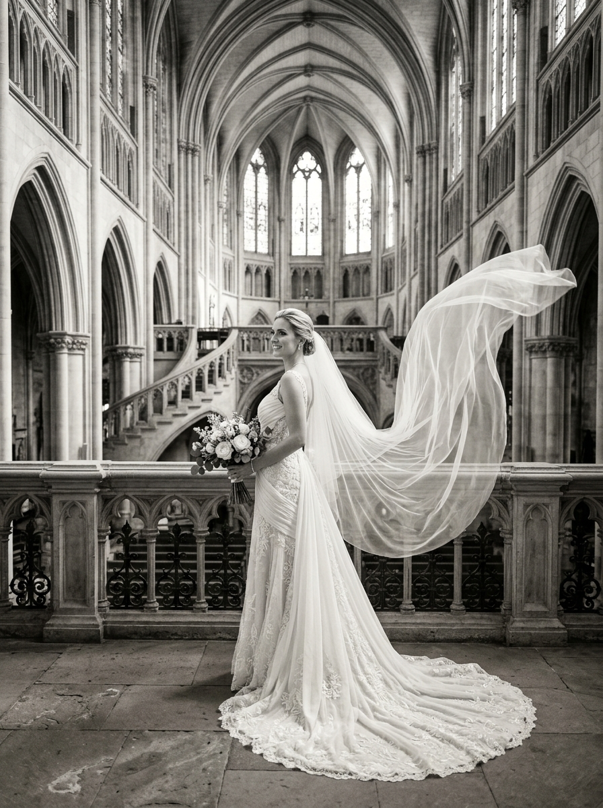
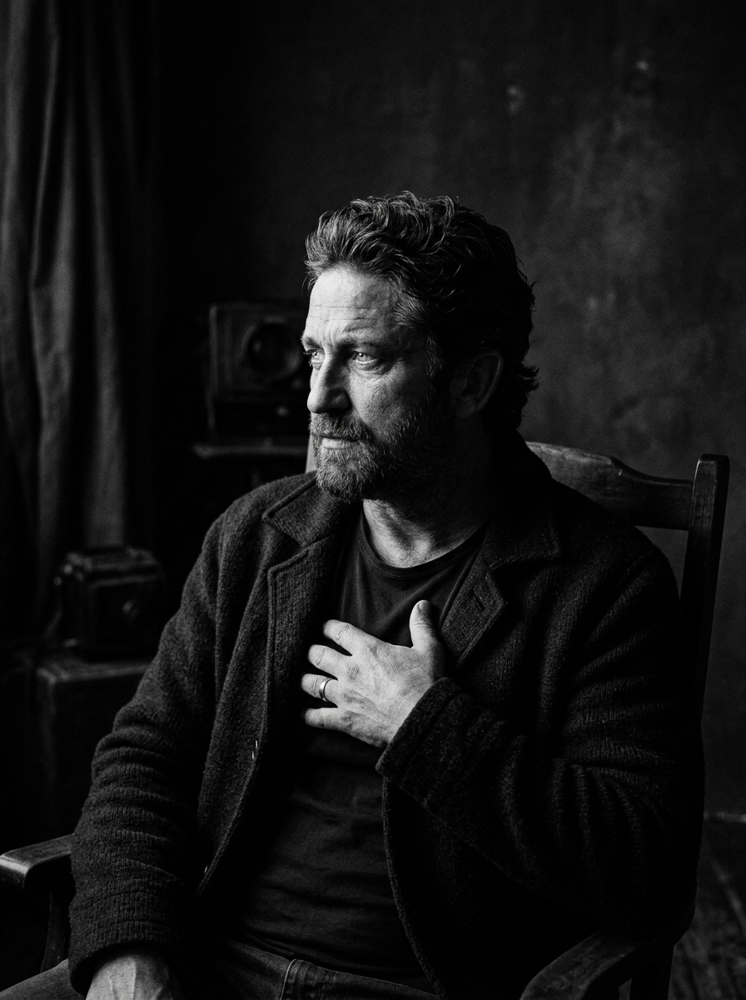

Fine Art & Editorial Studio
Silence in
Motion
Capturing the delicate interplay of light, shadow, and architectural elegance across world galleries and high fashion monographs.
WHO WE ARE
"We are a creative photography studio focused on capturing authentic moments, meaningful details, and timeless imagery."
Founded on the philosophy that true art exists in the space between light and memory. We compose minimalist visual narratives for high fashion monographs, intimate wedding ceremonies, and fine art gallery exhibitions globally.
10+
Years Experience
250+
Sessions
80+
Weddings
SELECTED WORKS
Featured Portfolio
A curated monographic collection across fine art, fashion, editorial, commercial, and wedding series.

WHAT WE OFFER
Studio Services
Comprehensive creative photography, visual direction, and monographic print design tailored to your narrative.
Wedding Photography
- Full-day coverage
- Pre-wedding sessions
- Candid photography
- Fine art handcrafted albums
Portrait Sessions
- Individual portraits
- Couple sessions
- Professional portraits
Commercial
- Product photography
- Brand campaigns
- Corporate photography
Events
- Corporate events
- Celebrations
- Cultural events
Tyson
Lead Photographer
BEHIND THE CAMERA
"I'm Tyson, a photographer and visual storyteller based in Kochi."
My approach is simple — create photographs that feel natural today and meaningful years from now. I specialize in observing unscripted interactions, architectural light refractions, and authentic human emotion without forced posing.